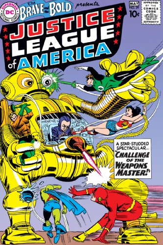
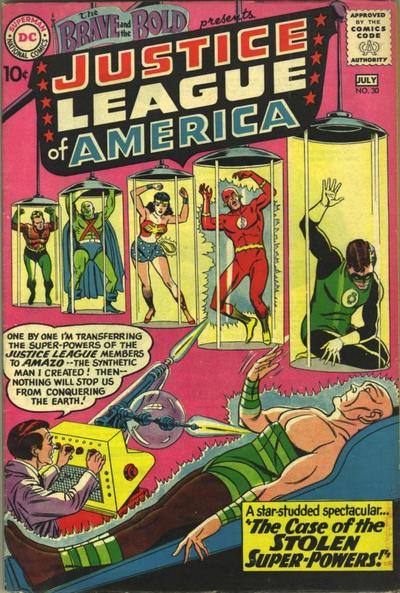
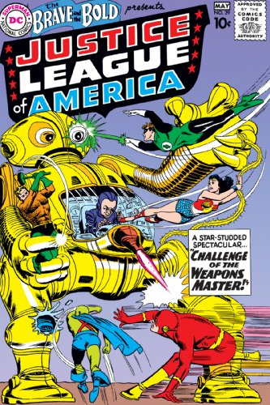
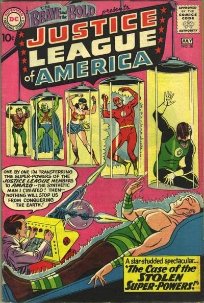

How it all begins?
Started back at early 1960, in The Brave and the bold #28 by writer gardner fox, artist mike sekowsky, and editor julius schwartz.
After a few succesful revivals of the Flash and Green Lantern, schwartz have decided to revive an old superhero team: the justice society of america, but with a twist...
Following the popularity of the american baseball leagues, the brilliant editor decided to rename the justice society to the Justice League of America.
The league's first apperance was in issue number 28 of DC's the brave and the bold, where they fought againsts Starro the conquerer.
And after a two back-to-back features at the brave and the bold, by late 1960, DC has decided to give the justice league their own title: Justice League of America vol. 1
 


